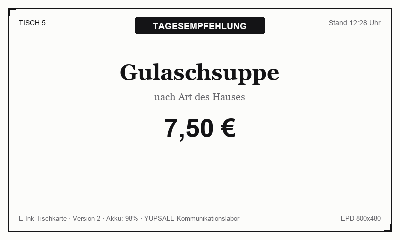

WEG A · MQTT
DISPLAY 001 gateway/001
Gateway verbunden

GASTRO-EPD 7.5" · SUB-1GHz RF
WEG B · WLAN
DISPLAY 002 ESP32 / Inkplate
Schläft / nächster Abruf in 15s
INKPLATE 10 · 802.11 b/g/n
Tischkarten-Inhalt ändern
Erstellt eine neue Bildversion und triggert den Nachrichtenfluss
Schnellvorlagen:
Protokoll- & Nachrichtenweg
Visualisiert die beiden Kommunikationspfade im Vergleich
A · MQTT-Gateway (Server stößt Push an)
Weboberfläche
→
Backend API
→
MQTT Broker
→
Gateway 001
→ RF →
Display 001 (E-Ink)
B · WLAN Direkt (Display fragt zyklisch nach)
1. Aufwachen
→
2. WLAN Connect
→
3. GET /manifest
→
4. GET /images/..
→
5. Deep Sleep (15s)
NACHRICHTEN-LOG (Live Protokoll)
Protokolliert alle Backend-, MQTT- und HTTP-Ereignisse in Echtzeit
Entscheidungsmatrix für Rollout (150–200 Tischkarten)
Aus dem Projektkonzept: Vergleich der Vor- und Nachteile in der Praxis
| Kriterium | Weg A · MQTT-Gateway (Funk) | Weg B · Direktes WLAN (ESP32/Inkplate) |
|---|---|---|
| Bildlich gesprochen | Ein Verteiler nimmt Aufträge an und funkt sie an die Schilder. | Jedes Schild holt sich sein Bild selbst. |
| Zusätzliche Hardware | Gateway erforderlich | Kein Gateway erforderlich |
| Firmware auf dem Display | Häufig nicht nötig bzw. herstellerspezifisch / fix | Vollständig anpassbar (Open Source C++/Arduino) |
| Batterielaufzeit | Sehr hoch (Monate bis Jahre durch Sub-GHz Funk) | Mittel (WLAN-Aufwachen kostet ~150mA für 2-3s; Deep Sleep ~15µA) |
| Sofortige Updates | Sofort per Gateway-Push | Erst beim nächsten Aufwachen (z.B. alle 15 Min.) |
| Infrastruktur (150–200 Stück) | 1–2 Gateways decken einen Gastraum/Saal ab | WLAN-Router muss 200 gleichzeitige Clients/DHCP verkraften |
| Kostenabschätzung | Geringerer Stückpreis pro Display + ca. 150–300 € Gateway | Höherer Stückpreis pro Display; spart Gateway |